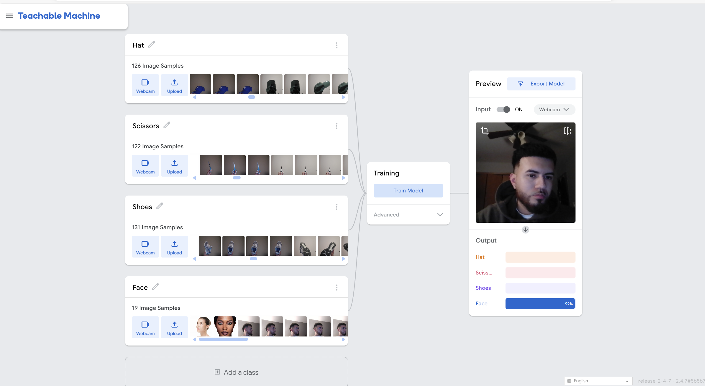

Project Objective
The main goal of my project is to develop an image identification model by using machine learning. With regard to the ethical and sociological issues that AI frequently raises, my specific goal was to create a teachable machine that could categorize photos into different groups. Building a working system is perceived as part of the goal; I also want to make sure that my work complies with fairness and inclusivity ideals and think carefully about how biases in training data can affect AI model results.
I also wanted to investigate how accessible machine learning resources, such as Google’s Teachable Machine, democratize access to AI research. By using this platform, I wanted to explore how these kinds of tools may enable anyone to experiment within machine learning ideas without requiring extensive coding experience.
Project Scope
My project's scope went beyond ordinary items since I wanted to investigate how a machine learning model would respond to a varied and unusual dataset. To test the model's capacity to distinguish between a variety of shapes, textures, and features, I chose everyday items like a hat, a pair of scissors, and a shoe in addition to a picture of my face.
These objects were specifically chosen to test the model: my face because it is dynamic and organic; the hate because it is soft and flexible; the scissors because they are sharp and metallic; and the shoe because of its uneven and intricate texture. The algorithm has to pick up minor differences between each item’s classification difficulty, which ranged from shiny surfaces to human features.
In order to train the model, various lighting situations, angles, and variations of these objects have to be captured. I photographed the hat both folded and flat, the scissors both open and closed, and the she from the top and sole, for instance. My face increased complexity as I experimented with the model;s ability to generalize across facial expressions and slight movements.
The result was a machine learning model capable of accurately recognizing these objects and features, demonstrating its ability to process a variety of inputs in real-world scenarios. This unconventional approach also provided insights into the model’s limitations and areas for improvement when dealing with diverse datasets.
Ethical Considerations and Joy Buolamwini's Insights
Addressing the ethical issues that are frequently connected to the development of AI was a crucial part of this effort. Unmasking AI: My Mission to Protect What is Human in a World of Machines by Joy Buolomwini offered critical insight on how biases in machine learning systems affect society Buoloamwini’s work underscores how imbalanced datasets can lead to discriminatory outcomes, particularly in applications like facial recognition. According to her, “when we think about the coded gaze, we must consider how it reflects the priorities, preferences, and sometimes prejudice of its creators.” Inspired by her research, I took deliberate steps to guarantee variety and inclusivity in my dataset, such as taking pictures from different lighting and perspectives to lessen the possibility of biases in the classification of faces and objects.
Early testing showed that under some lighting conditions and poor background spacing, the model first had trouble identifying the difference between the cap and the shoe, underscoring the significance of data quality To address this, I expanded the dataset with more images captured in similar environments. In addition, Buolamwini’s support of transparency inspired me to record each stage of the project, from gathering data to deploying it. This transparent method encourages responsibility in the interpretation and use of the model’s result by ensuring that users are aware of the systems limits and potential biases
Process
Data gathering was the first step of the process, which entailed finding a range of pictures for the four categories–my face, a hat, scissors, and a shoe. I took pictures of my face and every object from several perspectives in different lighting settings in order to produce a varied dataset. In order to evaluate the models generalization skills across increasingly complicated inputs, my face was purposefully included as a neutral category
In order to ensure a thorough depiction of every item, I made the decision to include roughly 100 photographs fir each category during the training phase. To increase the accuracy of the model, various viewpoints, lighting conditions, and orientations were used. For instance, I snapped pictures of the shoe from top and sole, the cap folded and flat, and the scissors closed. To improve the model’s capacity to distinguish items, I also included pictures of my face with different expressions and small movements.
To further enhance the accuracy and precision of the model, I added more variations of the items in the dataset. These consisted of variously colored scissors, shoes, and hats, each with its own distinct form and shape. I intended to push the model to identify minute differences and enhance its capacity to generalize across a larger range of real-world situations by presenting a more diverse spectrum of visuals.
Initial testing showed several difficulties. At first, in some lighting situations, the model had trouble telling the difference between the cap and the shoe. To solve this problem, I included more pictures of these items taken in comparable lightings conditions, which enhanced the models classification accuracy.
After the model's accuracy achieved satisfactory accuracy, I exported it into a web-based interface. To do this, the model had to be embedded using Teachable Machine’s tools, and a straightforward yet user-friendly interface had to be made so that users could test it using their own photos or webcam feeds.

Lessons Learned
Working on this project, I learned so much about the intricacies of machine learning from working on this project, especially as it relates to bias and inclusivity I learned how unbalanced datasets can reinforce societal disparities in AI systems by reading Joy Buolamwini’s Unmasking AI: My Mission to Protect What is Human in a WOrld of Machines. For instance, she found that a lack of diverse training data causes facial recognition systems to frequently misidentified people with darker skin tones. Inspired by this, I purposefully took an effort to make sure my dataset contained a range of things, such as hats and scissors, in various colors, shapes, and forms.
Buolamwini’s support of responsibility and transparency in AI also influenced how I documented the research. As she argues, “transparency in AI systems is not just an ethical ideal— it is a necessity.” To make sure that my work could be critically reviewed by others, I recorded every step of the process, from data gathering to model testing. This degree of transparency enabled me to consider the possible societal effects of my approach and helped me pinpoint opportunities for development
Additionally, I was able to comprehend the wider cultural challenges in tech thanks to Ellen Pao’s Tech Heal Thyself. She mentions "diversity and inclusion are not optional–they are necessary to create better technology.” This viewpoint strengthened my resolve to give equity and diversity top priority during the project
Last but not least, Buolamwinin’s focus on the social repercussions of biased AI forced me to look beyond its technological capabilities. Training a model to recognize things was insufficient; I also had to think about how the model may function with a variety of users in real-world situations. The significance of creating AI systems that are not only functional but also equitable, moral, and inclusive was emphasized by this research.
Video
I used a variety of material to aid in my study, such as machine learning courses and tutorials. One of the most influential videos I saw was Teachable Machine, which provided me with instructions that gave a concise and understandable overview of creating custom models. You can view it below to learn more about the fundamentals of this tool:
My Results
I’m excited to share the results of my project with you. Through an iterative process, I significantly improved my teachable machine model by diversifying the dataset for each class. For example, I re-created and added a variety of elements into each category—such as hats, scissors, and shoes of different colors, shapes, and materials. This ensured that the model could better generalize across real-world scenarios and accurately classify objects regardless of their specific characteristics.
Beyond improving the machine learning model itself, I enhanced the overall presentation of my project. I added a navigation menu at the top of the page, allowing users to quickly access key sections such as Scope, Process, Results, and My Model. This makes the website more user-friendly and ensures that viewers can seamlessly explore my work.
Additionally, I deepened my reflection on ethical considerations by incorporating insights from Joy Buolamwini’s Unmasking AI: My Mission to Protect What Is Human in a World of Machines. Her work on mitigating bias in AI systems directly influenced my approach to diversifying the dataset and documenting my process transparently. This project reaffirmed the importance of ensuring that machine learning models are fair, inclusive, and adaptable to a wide range of users.
By clicking the button below, you can access the teachable machine model I developed. With a webcam and images of a hat, scissors, a shoe, and my face, you can test the model’s accuracy and see machine learning in action.
Try My Model!
You can test the machine learning system using the interactive model that is accessible through this block. Items like a hat, scissors, a shoe, and my face are all classified by the algorithm. To engage with the model in real time, click the link below.
Interactive Model